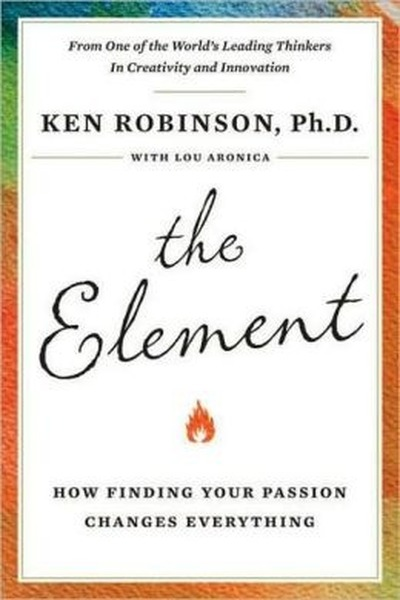

Library › Creativity
The Element — Summary & Key Lessons

How finding your passion changes everything — and why education keeps killing it.
📖 OPEN THE FULL INTERACTIVE BREAKDOWN →🌐 Read it in Hindi, Hinglish, Gujarati, Tamil & 22 more languages — free, with audio.
💡 The Big Idea
Everyone has an Element: the place where aptitude and passion intersect, where work feels like play and time disappears. Robinson argues that our standardized education systems systematically crush this — they rank subjects, punish mistakes and value conformity. Finding your Element requires reconnecting with your talents, finding your tribe, and treating creativity as a birthright, not a gift for the few.
🧠 The 6 Key Lessons
Lesson 1: The Element Is Aptitude × Passion × Attitude × Opportunity
Chapter 1: The Element
Robinson defines the Element as the intersection of what you're naturally good at, what you love, your attitude, and the opportunity to do it. Missing any component — talent without passion, passion without opportunity — keeps you outside the Element. The search is a personal research project, not a lucky strike.
📖 Example: Gillian Lynne, who choreographed Cats, was sent to a doctor as a 'problem child' for fidgeting — the doctor recognized a dancer, not a disorder. Her aptitude and passion finally met an opportunity, and the 'problem' became a global gift. Read the full example →
⚡ Do this: Map your own four circles: natural talents, things you love, your attitude toward risk, and available opportunities. Find the overlap and test it with one small project.
Lesson 2: Creativity Is for Everyone, Not Just Artists
Chapter 2: Creativity
Robinson defines creativity as 'original ideas that have value' — and insists it operates in science, business and everyday problem-solving, not only in art. The myth that only 'creative types' are creative is a learned belief that stops most people before they start. Creativity is a capacity, and capacities can be grown.
📖 Example: The entrepreneurs, engineers and teachers in Robinson's book are as 'creative' as any painter — they generate original, valuable solutions in their own domains. Creativity is not a department; it is a way of operating. Read the full example →
⚡ Do this: Reframe your daily work as a creative act: pick one routine process and design an original improvement this week.
Lesson 3: Mistakes Are the Price of Originality
Chapter 3: The Fear of Being Wrong
Schools punish wrong answers, so students learn to avoid them — and originality dies, because every original idea starts as a wrong-seeming one. Robinson's famous line: 'If you're not prepared to be wrong, you'll never come up with anything original.' Fear of error is the quiet killer of genius.
📖 Example: Children asked 'can you draw?' raise hands wildly; adults in the same room hesitate — somewhere between childhood and adulthood, the fear of wrongness was installed. The most innovative teams are the ones where trying and failing is normal, because that is… Read the full example →
⚡ Do this: Do one thing this week you might do badly — publicly. Draft, sketch, pitch, attempt. Notice that the world survives your imperfection.
Lesson 4: Find Your Tribe — We Become Who We Practice With
Chapter 4: The Tribe
People in their Element almost always found a community of like-minded souls that validated, inspired and challenged them. The tribe supplies the permission that families and schools withheld. If your environment treats your passion as weird, find the people who treat it as normal — environment is destiny in disguise.
📖 Example: Robinson's subjects repeatedly describe the moment they met 'their people' — fellow musicians, coders, dancers — as the turning point. Suddenly the passion that seemed odd at home was the most natural thing in the world, and skill exploded through shared… Read the full example →
⚡ Do this: Join one community of people who share your passion this month — online or offline — and participate, not just observe.
Lesson 5: Education's Job Is Not to Sort People Into Boxes
Chapter 5: Education
Robinson's critique of schooling: it ranks subjects (math above music), ages (one pace for all), and conformity, mistaking standardization for quality. The result is a system that manufactures compliance and calls it achievement. Learners — and careers — thrive when education is personalized, varied and exploratory.
📖 Example: The factory model of education, designed for the Industrial Age, still processes children in batches by age with identical curricula. Robinson's alternative: treat education like a garden where different plants need different conditions — not an assembly line. Read the full example →
⚡ Do this: Design your own curriculum: list what you actually need to learn for your Element and schedule one hour weekly of self-directed study in it.
Lesson 6: It's Never Too Late — Age Is a Story, Not a Statue
Chapter 6: The Personal Revolution
Robinson fills the book with people who found their Element late — after decades in the wrong career. The belief that 'it's too late' is the most common self-censorship in the world. Life is not a single escalator; it is a series of doors, and most are still open.
📖 Example: Susan Boyle became a global star in her late 40s after years of obscurity; countless second-act stories in the book share one trait — someone finally gave themselves permission. The Element does not expire; the permission does. Read the full example →
⚡ Do this: Write the one thing you've shelved as 'too late'. Reopen it this month with a single, small, dated step.
✅ 5-Step Action Plan
- Map your aptitude/passion/attitude/opportunity circles and test the overlap
- Treat one routine process as a creative act this week
- Do one thing badly in public
- Join one community of your people this month
- Schedule one weekly hour of self-directed Element study
⚠️ When This Doesn't Work
⚠️ When this doesn't work: 'Follow your passion' is terrible advice for people without a financial cushion — rent must be paid, and not everyone can monetize their Element. Passion without market reality is a hobby, and hustle culture has weaponized the idea that your work must be your bliss. Build the bridge from stability to Element, not the other way around.
💀 The Graveyard Proves It
🎸 Decca Records — 'Guitar Groups Are on the Way Out'. Burn: The Beatles. Read the full case study →
💬 Best Quotes from The Element
- “The Element is the meeting point between natural aptitude and personal passion.”
- “Creativity is as important as literacy and we should treat it with the same status.”
- “If you're not prepared to be wrong, you'll never come up with anything original.”
Interactive version: mark lessons as read, listen in your language, share quote cards.